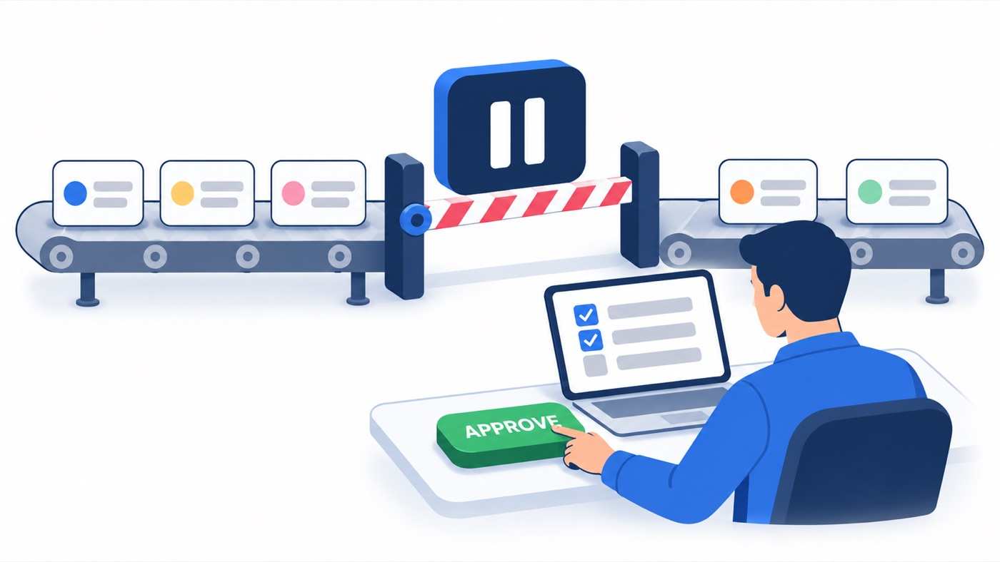
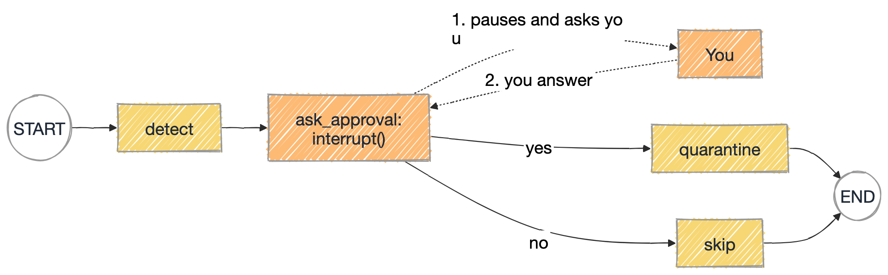

Lesson 07 007_Human_In_The_Loop.py No API key needed
Human approval gates
interrupt() pauses the graph and waits for a person. Command(resume=...) continues it with their answer.
Real-world example

In LangGraph

Key points
- 1interrupt() needs a checkpointer
- 2Resume with Command(resume=answer)
- 3Same thread_id, or it starts over
Try it
$ python 007_Human_In_The_Loop.py yes Graph paused. It is asking: Quarantine these tests? (yes/no) - login_redirect - search_autocomplete Paused before node: ('ask_approval',) Resumed with 'yes' -> quarantined 2 tests